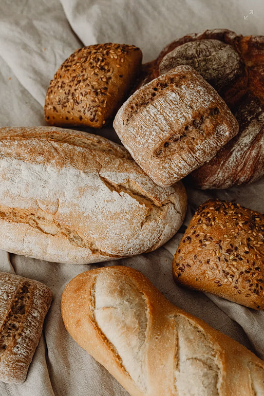

Guías, secretos y ciencia explicada para amantes del pan verdadero.
Cómo conservar tu pan para que dure toda la semana
Hiciste un pan de masa madre increíble, duró crujiente el primer día, ¿y ahora qué? Saber guardarlo es el verdadero secreto para no desperdiciar nada.

Dejar enfriar por completo sobre rejilla antes de empaquetar evita que la humedad ablande la corteza.
Entre la clásica bolsa de tela para los primeros días y el congelado por rebanadas en bolsas herméticas, existen técnicas clave para mantener tanto la miga suave como la corteza en su punto justo.
¿Por qué la fermentación lenta sienta mejor a la digestión?
Durante las 24 horas de fermentación, las bacterias Lactobacillus y levaduras salvajes transforman la masa mediante dos procesos biológicos:
Pre-digestión de almidones: Las amilasas descomponen los carbohidratos complejos en azúcares simples, reduciendo la carga de trabajo estomacal.
Degradación del ácido fítico: La acidificación activa la enzima fitasa, eliminando hasta un 90% del ácido fítico y liberando minerales esenciales como hierro, zinc y magnesio.